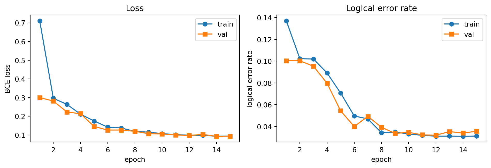

[2026 ABC 프로젝트 멘토링 2기] 3주차 - Annotated Detector Graph와 GNN 디코더 첫 학습
Stim으로 만든 신드롬 데이터를 annotated detector graph로 변환하고, PyTorch Geometric 기반 GraphConv 디코더의 첫 학습 파이프라인을 정리합니다.
ABC프로젝트멘토링
유클리드소프트
고용노동부
대한상공회의소
미래내일일경험사업
PyTorch
QEC
Author
Beomdo Park
Published
April 20, 2026
Modified
April 19, 2026
안녕하세요, ABC 프로젝트 멘토링 2기 ROQET 팀의 세 번째 기술노트입니다. 2주차에 Stim으로 (detection_events, observable_flips) 페어 데이터를 만들었다면, 이번 주는 그 데이터를 그래프로 다시 빚어 GNN 디코더에 흘려보내는 과정을 정리합니다.
Lange et al. (2025) 논문에서는 노드 피처에 “몇 라운드 전에 발화했는가” 같은 추가 정보도 얹습니다. 이번 주차에서는 거리 \(d=3\), 라운드 3 회로로 그래프 크기가 작으니, 과하게 복잡한 피처는 넣지 않고 위 네 가지만 씁니다.
1-2. 왜 PyTorch Geometric인가?
PyTorch Geometric(PyG)은 “노드 피처 × 이웃 피처”를 매번 직접 gather/scatter 하지 않아도 되게 해주는 라이브러리입니다. 회로가 커지고(=그래프가 커지고) 배치가 수백~수천 샷이 되면 이 스캐터 연산이 핵심 병목이 되는데, PyG는 이를 CUDA 커널로 묶어 제공합니다. 디코더 프로토타이핑 용도로 사실상 표준입니다.
import timeimport numpy as npimport stimimport torchimport torch.nn as nnimport torch.nn.functional as Fimport pymatchingfrom torch_geometric.data import Datafrom torch_geometric.loader import DataLoaderfrom torch_geometric.nn import GraphConv, global_add_pool, global_mean_poolprint(f"torch={torch.__version__}, stim={stim.__version__}, "f"pymatching={pymatching.__version__}")torch.manual_seed(0)np.random.seed(0)
torch=2.7.1+cpu, stim=1.15.0, pymatching=2.3.1
2. Stim DEM → PyG Data 변환 파이프라인
한 샷을 그래프 하나로 만드는 변환은 다음 세 단계로 쪼갭니다.
회로-고정 구조를 한 번만 만든다: edge_index, edge_attr, detector 좌표
샷마다 달라지는 부분을 덮어쓴다: x[:, 0] = detection events, y = observable flip
이렇게 만든 Data 객체를 DataLoader로 배치화
2-1. 회로 정의
2주차와 동일한 회로 — 거리 \(d=3\), 라운드 3, 회로 수준 잡음 \(p=0.005\)의 rotated memory Z 회로 — 를 그대로 씁니다.
Stim의 DetectorErrorModel은 “어떤 detector들이 동시에 발화하는가”를 error(p) D0 D1 ... 형태로 나열합니다. decompose_errors=True로 만들면 Y 오류처럼 여러 detector를 동시에 건드리는 메커니즘이 separator(^) 로 구분된 2-체 컴포넌트들로 이미 분해돼 있습니다. 우리는 그 컴포넌트들만 골라 엣지로 가져오면 됩니다.
확률은 MWPM 가중치와 같은 \(w = -\log p\)로 변환하고, 같은 detector 쌍에 여러 메커니즘이 붙으면 확률을 합쳐줍니다.
def build_static_graph(circuit: stim.Circuit):"""회로 한 번에 대해 edge_index, edge_attr, detector 좌표를 만든다.""" dem = circuit.detector_error_model(decompose_errors=True) num_detectors = dem.num_detectors coords_dict = circuit.get_detector_coordinates() coord_arr = np.zeros((num_detectors, 3), dtype=np.float32)for i inrange(num_detectors): c = coords_dict.get(i, [0.0, 0.0, 0.0]) coord_arr[i, : len(c)] = c# 같은 (a, b) 엣지에 여러 메커니즘이 기여하면 확률을 XOR-합으로 합친다. edge_p = {}for instr in dem.flattened():if instr.type!="error":continue p = instr.args_copy()[0]if p <=0.0:continue component, components = [], []for t in instr.targets_copy():if t.is_separator():if component: components.append(component) component = []elif t.is_relative_detector_id(): component.append(t.val)if component: components.append(component)for comp in components:iflen(comp) !=2: # 1-체(boundary)/3-체 이상은 다음 주차 숙제continue a, b =sorted(comp) prev = edge_p.get((a, b)) edge_p[(a, b)] = p if prev isNoneelse prev * (1- p) + p * (1- prev) edges =list(edge_p.keys()) weights = [-np.log(max(edge_p[e], 1e-12)) for e in edges] edge_index = torch.tensor(edges, dtype=torch.long).t().contiguous() edge_attr = torch.tensor(weights, dtype=torch.float32).unsqueeze(1)# GraphConv는 무방향 그래프를 가정하므로 양방향 엣지로 펼친다. edge_index = torch.cat([edge_index, edge_index.flip(0)], dim=1) edge_attr = torch.cat([edge_attr, edge_attr], dim=0)return edge_index, edge_attr, coord_arredge_index, edge_attr, coord_arr = build_static_graph(circuit)print(f"edges (directed) = {edge_index.shape[1]}")print(f"edge weight 분포 : min={edge_attr.min():.2f}, "f"median={edge_attr.median():.2f}, max={edge_attr.max():.2f}")
한 가지 주의점은 Stim DEM 메커니즘이 항상 2-노드 엣지로 떨어지진 않는다는 것입니다. 일부는 단일 detector(boundary) 에 붙은 메커니즘이고, 일부는 Y 오류처럼 3개 이상의 detector를 동시에 건드립니다. 위 코드는 간결함을 위해 2-체만 살리고 나머지는 버리는 근사를 쓰는데, 실제로는 boundary 노드를 추가하거나 하이퍼엣지를 펼쳐야 합니다. 다음 주차에 이 부분부터 다듬을 예정입니다.
2-3. 샷 단위로 그래프 만들기
build_static_graph에서 나온 구조는 모든 샷이 공유합니다. 각 샷은 “어떤 detector가 발화했는지”와 “논리 관측량이 뒤집혔는지”만 바꿔주면 됩니다.
분류 문제이므로 손실은 BCE with logits가 자연스럽습니다. 2주차에 측정했던 raw 논리 오류율이 수 %로 대략 균형이 맞는 편이라 pos_weight 없이 시작해도 크게 문제 되지 않습니다. 오류율이 1% 이하로 떨어지는 설정이라면 이야기가 달라져서 가중치를 꼭 넣어야 합니다.
4-2. 학습 루프
def run_epoch(loader, train: bool): model.train(train) total_loss, total_correct, total =0.0, 0, 0for batch in loader: batch = batch.to(device) logit = model(batch) loss = loss_fn(logit, batch.y)if train: opt.zero_grad() loss.backward() opt.step() pred = (logit.sigmoid() >0.5).float() total_loss += loss.item() * batch.num_graphs total_correct += (pred == batch.y).sum().item() total += batch.num_graphsreturn total_loss / total, 1- total_correct / total # loss, 논리 오류율EPOCHS =15history = []for epoch inrange(1, EPOCHS +1): tr_loss, tr_ler = run_epoch(train_loader, train=True) va_loss, va_ler = run_epoch(val_loader, train=False) history.append((epoch, tr_loss, tr_ler, va_loss, va_ler))if epoch ==1or epoch %3==0or epoch == EPOCHS:print(f"epoch {epoch:02d} | train loss {tr_loss:.4f} / LER {tr_ler:.4%}"f" | val loss {va_loss:.4f} / LER {va_ler:.4%}")
epoch 01 | train loss 0.7108 / LER 13.7000% | val loss 0.2999 / LER 10.0333%
epoch 03 | train loss 0.2639 / LER 10.1963% | val loss 0.2232 / LER 9.5333%
epoch 06 | train loss 0.1421 / LER 4.9667% | val loss 0.1264 / LER 4.0000%
epoch 09 | train loss 0.1152 / LER 3.4963% | val loss 0.1069 / LER 3.3667%
epoch 12 | train loss 0.0990 / LER 3.1111% | val loss 0.0976 / LER 3.2000%
epoch 15 | train loss 0.0939 / LER 3.1222% | val loss 0.0936 / LER 3.5667%
4-3. 손실 / 오류율 곡선
import matplotlib.pyplot as pltep = [h[0] for h in history]tr_loss = [h[1] for h in history]va_loss = [h[3] for h in history]tr_ler = [h[2] for h in history]va_ler = [h[4] for h in history]fig, axes = plt.subplots(1, 2, figsize=(10, 3.5))axes[0].plot(ep, tr_loss, marker="o", label="train")axes[0].plot(ep, va_loss, marker="s", label="val")axes[0].set_xlabel("epoch"); axes[0].set_ylabel("BCE loss"); axes[0].legend()axes[0].set_title("Loss")axes[1].plot(ep, tr_ler, marker="o", label="train")axes[1].plot(ep, va_ler, marker="s", label="val")axes[1].set_xlabel("epoch"); axes[1].set_ylabel("logical error rate"); axes[1].legend()axes[1].set_title("Logical error rate")plt.tight_layout()plt.show()

TinyGraphDecoder 학습 곡선 (d=3, p=0.005, rounds=3, 30,000샷).
몇 가지 관찰 포인트.
손실/오류율이 확실히 떨어진다 → 데이터 파이프라인과 모델이 적어도 논리적으로 연결돼 있다는 신호입니다. 연결이 끊기면 손실이 움직이지 않거나 라벨과 무관한 값으로 수렴합니다.
처음 몇 epoch 동안은 모델이 모두 0에 가까운 예측을 내며 raw 오류율 근처에서 정체합니다. sum-pool 신호가 충분히 학습돼야 비로소 LER이 떨어지기 시작합니다.
val과 train의 간격이 크지 않다 → 30,000샷 정도면 이 작은 모델은 과적합 걱정이 거의 없습니다. 모델을 키우기 시작하면 상황이 바뀔 수 있습니다.
5. MWPM Baseline과 한 줄 비교
같은 30,000샷에 PyMatching을 그대로 흘려서 MWPM 기준점을 같이 측정합니다. 동일한 데이터에 대해 두 디코더의 오류율을 비교해야 해석이 깨끗합니다.
이 표는 “GNN이 MWPM보다 잘한다”는 주장을 하기 위한 것이 아닙니다. 오히려 “가장 순진한 GNN도 한 자릿수 안에는 들어온다 → 이후 개선의 여지가 크다”는 쪽을 읽어야 합니다. Lange et al. 논문의 수준에 도달하려면 (1) 엣지 가중치 활용, (2) 더 많은 라운드, (3) 더 큰 거리, (4) 더 많은 샷, (5) 구조를 반영한 readout이 필요합니다.
정리
단계
내용
그래프 정의
annotated detector graph의 노드/엣지 피처를 표 형태로 고정
데이터 변환
Stim DEM → 공유 edge_index/edge_attr + 샷마다 x/y만 갱신
모델
GraphConv ×2 → mean+sum pool → MLP의 최소 구성
학습
BCE + Adam(3e-3) + PyG DataLoader로 15 epoch 스모크 테스트
결과
본문에 출력된 raw / MWPM / GNN LER 한 자리 비교
“파이프라인이 끝까지 붙어 돌아간다”는 목표는 달성했습니다. 여기서부터는 지표를 올리는 작업입니다.
Note다음 주차 예고
4주차에서는 (1) boundary 노드와 하이퍼엣지를 반영하도록 그래프 빌더를 다듬고, (2) edge_attr를 실제로 쓰는 convolution으로 교체해 MWPM 대비 의미 있게 앞서는 구간을 찾아볼 계획입니다. 여력이 되면 거리 \(d=5\) / 라운드 5로 스케일을 한 칸 올려보겠습니다.
Tip참고 문헌
Lange, M. et al. (2025). Data-driven decoding of quantum error correcting codes using graph neural networks. Physical Review Research, APS.
Fey, M. & Lenssen, J. E. (2019). Fast Graph Representation Learning with PyTorch Geometric. ICLR Workshop. pyg.org